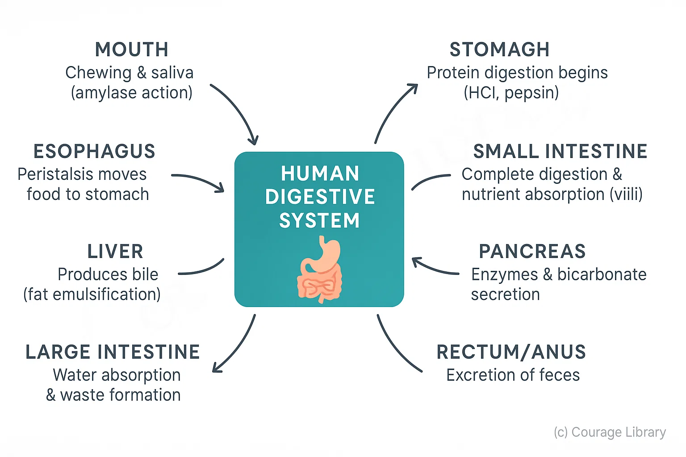

SSC CGL - Detailed Guide 2025
Self-Paced Course
Human Digestive System
Reference: NCERT Class 10-12, Lucent GK
Human Digestive System
The human digestive system is responsible for the breakdown of food into simpler substances for absorption and energy. It involves a series of organs and enzymes working in a coordinated process.
1. Digestive Organs and Enzymes
The digestive system is made up of the alimentary canal and accessory glands.

A. Alimentary Canal (in sequence)
| Organ | Function |
|---|---|
| Mouth | Ingestion; mechanical breakdown by teeth; saliva mixes food |
| Pharynx | Passage for food and air |
| Oesophagus | Pushes food to stomach via peristalsis |
| Stomach | Stores, churns food; begins protein digestion |
| Small Intestine | Digestion & absorption of nutrients |
| Large Intestine | Absorbs water and forms feces |
| Rectum & Anus | Temporary storage and elimination of waste |
B. Digestive Glands & Their Secretions
| Gland/Source | Secretion | Function |
|---|---|---|
| Salivary Glands | Saliva (contains salivary amylase) | Breaks down starch into maltose |
| Gastric Glands (stomach) | HCl, pepsin, mucus | HCl: acidic medium; Pepsin: digests proteins |
| Liver | Bile (stored in gallbladder) | Emulsifies fats (breaks them into small droplets) |
| Pancreas | Pancreatic juice (contains amylase, lipase, trypsin) | Digests carbs, proteins, fats |
| Intestinal Glands | Intestinal juice (succus entericus) | Completes digestion of all food types |
Enzymes Summary Table
| Enzyme | Secreted By | Acts On | End Product |
|---|---|---|---|
| Salivary Amylase | Salivary glands | Starch | Maltose |
| Pepsin | Gastric glands (stomach) | Proteins | Peptides |
| Trypsin | Pancreas | Peptides | Amino acids |
| Lipase | Pancreas & intestinal wall | Fats | Fatty acids + Glycerol |
| Amylase (Pancreatic) | Pancreas | Starch | Maltose |
| Maltase, Sucrase, Lactase | Intestinal glands | Disaccharides | Glucose, Fructose, Galactose |
2. Digestion Process and Absorption
Digestion Process: Step-by-Step
| Stage | Description |
|---|---|
| Ingestion | Intake of food through the mouth |
| Mechanical Digestion | Chewing and churning of food (mouth and stomach) |
| Chemical Digestion | Breakdown by enzymes and digestive juices |
| Absorption | Nutrients absorbed into blood via villi in small intestine |
| Assimilation | Nutrients used by body cells for energy and growth |
| Egestion | Elimination of undigested waste through anus |
Absorption of Nutrients
- Takes place mainly in the small intestine (jejunum and ileum).
- Finger-like projections called villi increase surface area for absorption.
- Nutrients absorbed:
- Glucose & amino acids → blood capillaries
- Fatty acids & glycerol → lacteals (lymph vessels)
Important Points to Remember
- • Bile contains no enzymes but helps in fat digestion by emulsification.
- • Stomach provides acidic pH (1.5-2) needed for pepsin activity.
- • Pancreas is both exocrine (digestive enzymes) and endocrine (insulin).
- • Food takes approx. 24-36 hours to fully pass through the digestive system.
Developed By Satyam Kumar
Next
Master Biology Concepts with Us!
Join Courage Library for comprehensive study materials and expert guidance.
Be a Couragian!